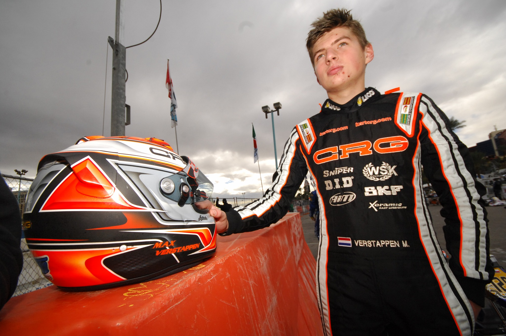
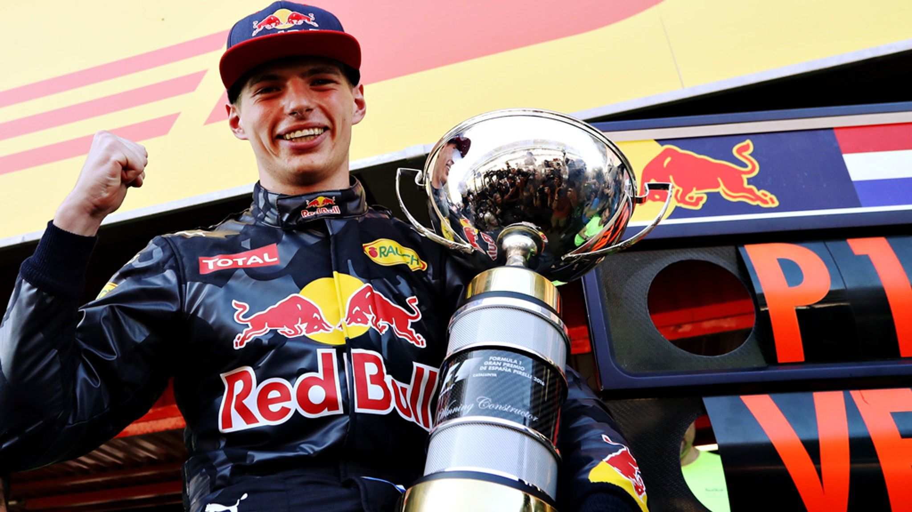
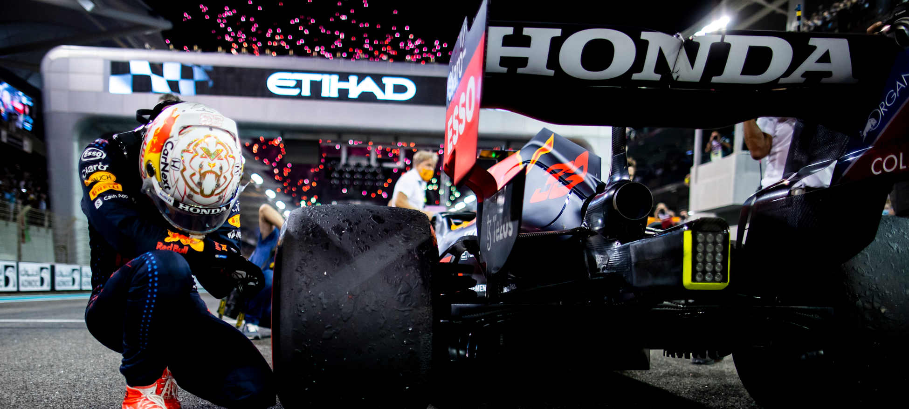

🏎️ O Domínio no Kartismo (2005 - 2013)

Max Verstappen é considerado um dos maiores talentos da história do kart, moldado por um treinamento rigoroso focado em técnica e resiliência.
- Formação Intensiva: Treinado pelo pai, Jos Verstappen, aprendeu a pilotar em condições extremas e a entender a mecânica do chassi desde muito cedo.
- Rivalidades Históricas: Enfrentou e venceu futuros pilotos de F1, como Charles Leclerc, protagonizando disputas memoráveis no cenário europeu.
- O Ápice em 2013: Em seu ano de despedida do kart, conquistou o título de Campeão Mundial de KZ e dois títulos europeus, consolidando sua subida meteórica para os carros.
🏎️ O Fenômeno Precoce (2014 - 2016)

Filho do ex-piloto Jos Verstappen, Max foi preparado desde o berço para ser um campeão. Sua ascensão foi tão rápida que a FIA precisou mudar as regras de idade mínima após sua estreia.
- Estreia Recorde: Estreou na F1 pela Toro Rosso com apenas 17 anos e 166 dias, antes mesmo de ter habilitação para dirigir nas ruas.
- Vitória Imediata na Red Bull: Em 2016, foi promovido para a equipe principal da Red Bull no GP da Espanha. Em sua primeira corrida pelo time, ele venceu, tornando-se o vencedor mais jovem da história (18 anos).
⚔️ A Quebra do Domínio e o Primeiro Título (2021)

Após anos sendo o único a incomodar as Mercedes, 2021 foi o ano do confronto direto com Lewis Hamilton. Foi uma das temporadas mais intensas e polêmicas da história do esporte.
- Rivalidade com Hamilton: A batalha entre Verstappen e Hamilton foi marcada por colisões, controvérsias e uma disputa acirrada até a última corrida.
- GP de Abu Dhabi 2021: O título foi decidido em uma última volta cinematográfica. Verstappen ultrapassou Hamilton após uma relargada polêmica, conquistando seu primeiro mundial e encerrando a sequência de títulos do britânico.
🔝 A Era de Domínio Absoluto (2022 - 2024)

Com a mudança do regulamento técnico, a Red Bull e o projetista Adrian Newey entregaram carros que se tornaram extensões do corpo de Max.
- 2022 e 2023: Foram anos de "atropelo". Em 2023, ele quebrou o recorde de 10 vitórias consecutivas e venceu 19 das 22 corridas da temporada — um aproveitamento de 86,3%, superando o recorde histórico de Jim Clark que durava 60 anos.
- Interlagos e o Tetracampeonato (2024): Largando de P17 e com um carro inferior, em condições de chuva intensa, Verstappen escalou o pelotão e ampliou sua liderança no campeonato para o tetracampeonato. Essa foi considerada uma de suas melhores atuações na Fórmula 1. A vitória em Interlagos marcou o fim de um jejum de 10 corridas sem vitórias de Verstappen e foi crucial para sua caminhada ao tetracampeonato mundial em 2024. Max garantiu o quarto título consecutivo com duas corridas de antecedência, consolidando sua dinastia.